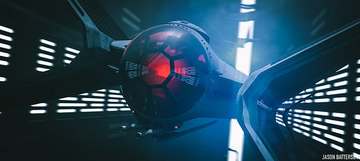

La flota del Imperio incluye los veloces y maniobrables TIE Fighters. Aunque carecen de escudos, su gran número y táctica de enjambre los hacen formidables en batalla.
El Imperio Galáctico en Star Wars es una dictadura autoritaria que surgió tras la caída de la República Galáctica. Fundado por el Emperador Palpatine, también conocido como Darth Sidious, el Imperio buscaba consolidar el poder absoluto y eliminar cualquier forma de resistencia. Bajo su régimen, se implementaron políticas de opresión y control total sobre los sistemas estelares. La fuerza militar del Imperio estaba compuesta por una vasta flota de naves de guerra, incluyendo destructores estelares y la temida Estrella de la Muerte, una estación espacial capaz de destruir planetas enteros. Los Sith, liderados por Palpatine y su aprendiz Darth Vader, jugaron un papel crucial en mantener el orden y sofocar cualquier rebelión. A pesar de su poderío, el Imperio enfrentó una resistencia constante por parte de la Alianza Rebelde, que finalmente logró derrocar al régimen opresivo. La historia del Imperio Galáctico es una advertencia sobre los peligros del poder absoluto y la importancia de la resistencia frente a la tiranía.
La flota del Imperio incluye los veloces y maniobrables TIE Fighters. Aunque carecen de escudos, su gran número y táctica de enjambre los hacen formidables en batalla.
Los líderes del Imperio incluyen al Emperador Palpatine y su aprendiz Darth Vader. Palpatine transformó la República en el Imperio, y Vader, antes Anakin Skywalker, se convirtió en su ejecutor. Otros líderes notables son el Gran Moff Tarkin y el Almirante Thrawn.
La derrota del Imperio en Endor se debió a la destrucción de la segunda Estrella de la Muerte por parte de la Alianza Rebelde en una batalla que decidió el futuro de la galaxia.